Квартира M1 — сравнение с Fears to Fathom
Слева — сохранённый framebuffer нашей игры. Справа — официальные скриншоты разработчиков. Кадры не перерисованы и не обработаны для сравнения. Нажми на изображение для просмотра крупнее.
Это рабочая художественная веха, равенство качества пока не подтверждено. Здесь проверяются конкретные материалы, свет, плотность предметов и внешний мир. Сюжет и монстр в M1 отсутствуют.
Текущие кадры: 0.2.8-dev, native pass24, 1920×1080 PC. Полная генерация, обе запечки и 46 тестов pass24. Средний FPS 59.886 при лимите 60; это короткий прогон на одном ПК.
Тёплая комната и холодное окно
Локальные источники света и холодный наружный слой. Наш кадр светлее и более однороден по цвету; это уютное начало, но материалам нужна самостоятельная фактура.
Плотность предметов и материалы
Сравниваем окружение, не наличие персонажа: полки, стекло, дерево, разный масштаб деталей. У референса лучше мелкие надписи, неоднородность поверхностей и естественность раскладки.
Кухня и бытовое наполнение
Дополнительный референс — Home Alone. У нашей кухни больше мелких предметов, но материал эмали и столешницы пока слишком ровный. У референса убедительнее неоднородность поверхности и контактные тени.
Советская кухня: From the Darkness
Близкие предметы позволяют сравнивать форму холодильника, эмаль, шкафы и клеёнку. У референса убедительнее история поверхностей и мягкость бликов. Его заброшенность не подходит нашему уютному началу; переносим убедительность материала, не грязь по всей квартире.
Ночная улица
Сравниваем читаемость планов и точек света. Предметы двора добавлены, но на нашем кадре ещё слишком темны. У референса свет лучше выделяет дверь, фасад и машину; это конкретный разрыв качества для следующей итерации.
Другие комнаты нашей игры
 Спальня
Спальня Прихожая
Прихожая Ванная
Ванная Лестница
Лестница Отключение света
Отключение светаСпальня: ранний preview и текущий
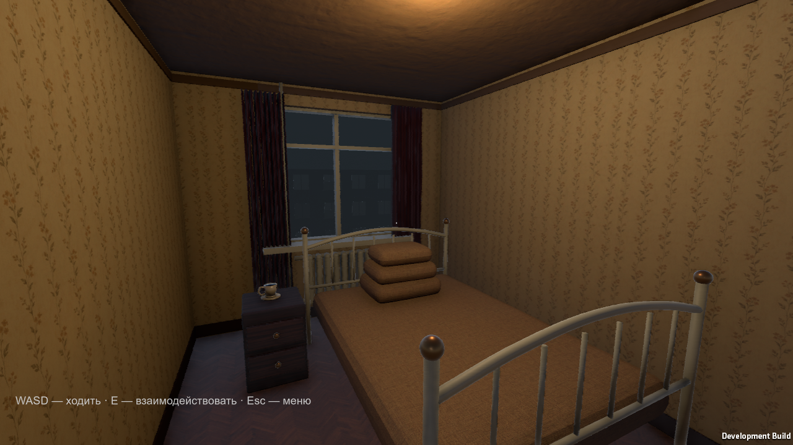
Предыдущий опубликованный preview · тот же ракурсНовый preview · белое бельё, предметы, швейный уголок и тюльМелкие предметы и хранение
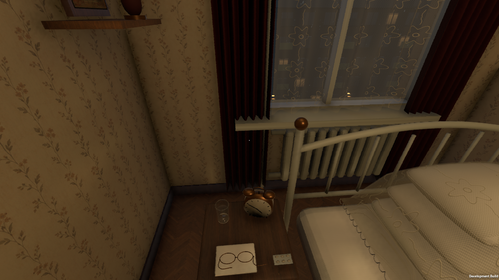
Тумбочка: будильник, вода, очки и таблетки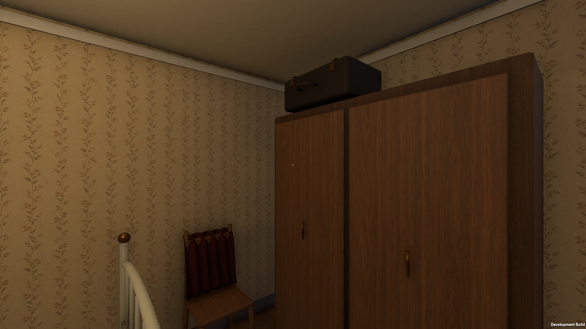
Шифоньер, чемодан и стул с шальюДвор: исправление свечения и света, 0.2.1 → 0.2.2
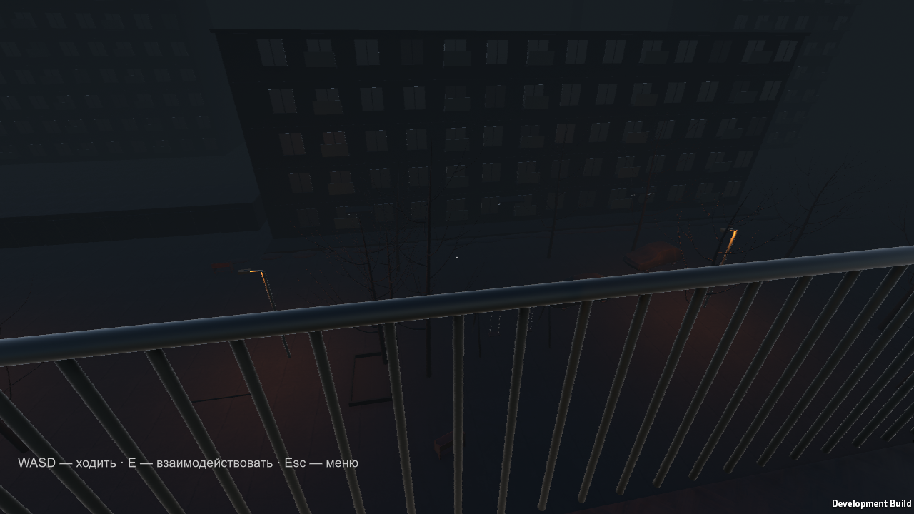
0.2.1 · окна с отключённой функцией свечения Текущий preview · реальные окна и направленный свет двора
Текущий preview · реальные окна и направленный свет двораМебель: направление волокон и отражения комнат
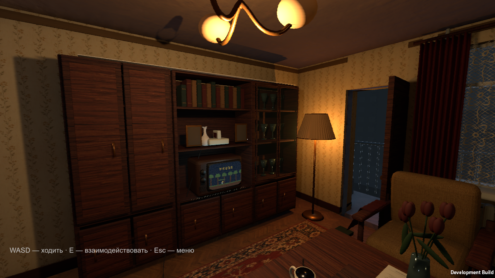
0.2.1 · прежний материал Текущий preview · новый материал в настоящем плеере
Текущий preview · новый материал в настоящем плеереЯщик и мойка — новые игровые детали
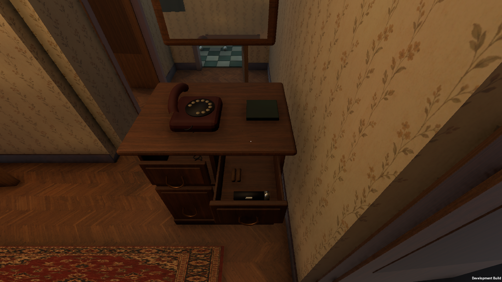
Ящик открывается через E; фонарик пока реквизит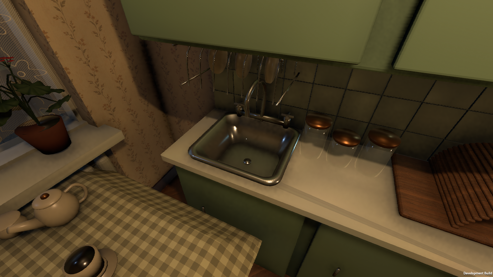
Объёмная чаша, слив и смесительНастоящая посадка в кресло
Камера на высоте сидящего человека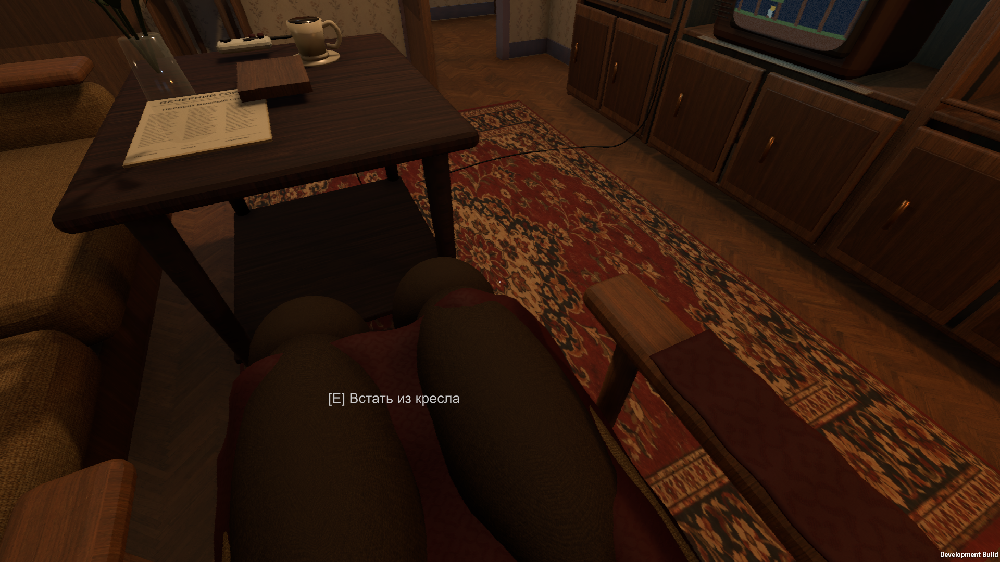
Колени, плед и подлокотники · E — встать Переход и сохранение проверены в игре. Комфорт управления человеком ещё не оценён; ткань требует художественной доводки; провод перенесён к дальнему краю столика.
Шпон и фотографии: 0.2.3 → 0.2.4
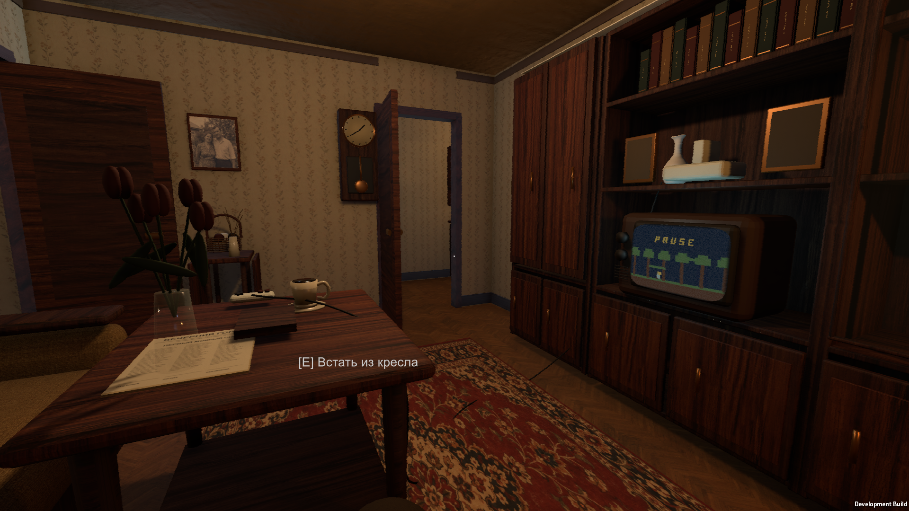
0.2.3 · пустые рамки и прежнее деревоТекущий preview · реальные кадры одного ракурса, без дорисовкиМелкий шпон и разные материалы предметов; семейные фото в стенке и новая траектория провода. Это конкретная итерация, не утверждение равенства с FtF.
Подушки и тюль: 0.2.4 → 0.2.5
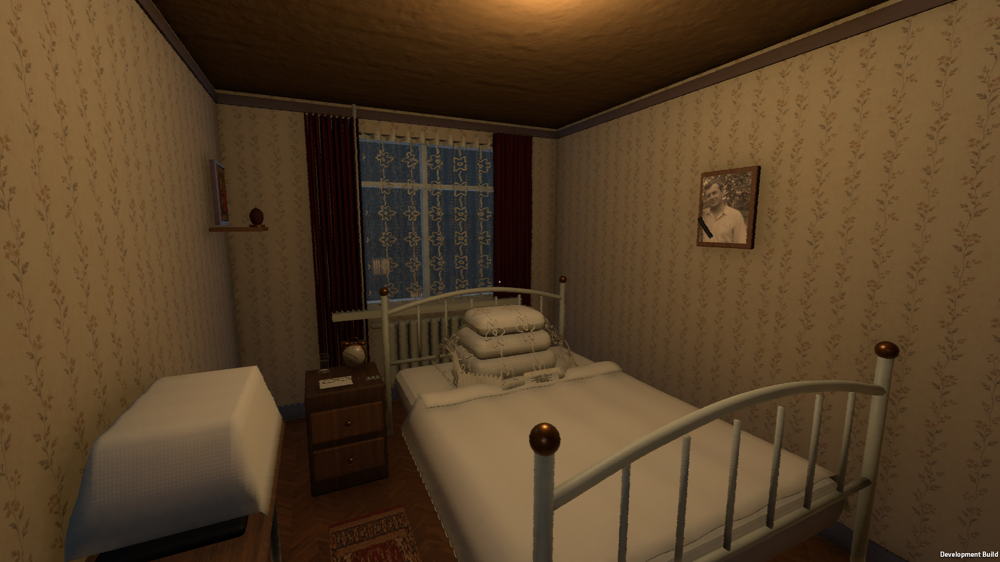
0.2.4 · прежняя геометрия и alpha-testТекущий кадр · мягкие края подушек и плавная прозрачностьНастоящие кадры одного ракурса. Не являются подтверждением художественной приёмки.
Взгляд из тёплой кухни
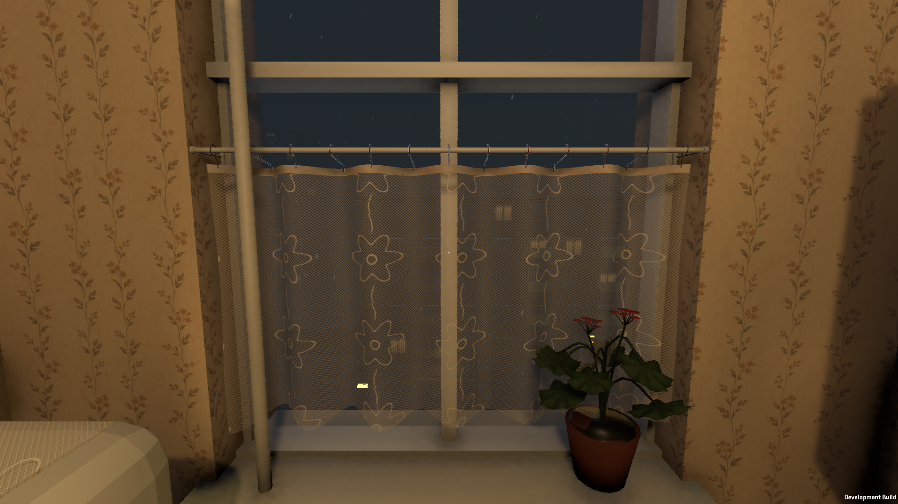
Отдельный ракурс кухонного окна · 1920×1080 Те же материалы в общем виде кухни
Те же материалы в общем виде кухниПлафоны люстры: 0.2.6 → 0.2.7
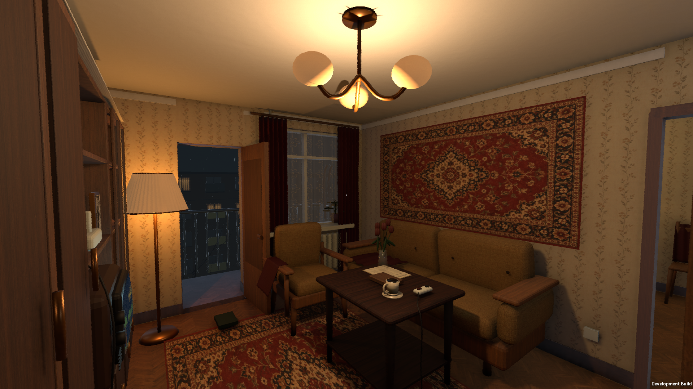
0.2.6 · плафоны с резкой границей внешнего освещения Текущий кадр · отдельный материал молочного стекла, мягкое свечение
Текущий кадр · отдельный материал молочного стекла, мягкое свечение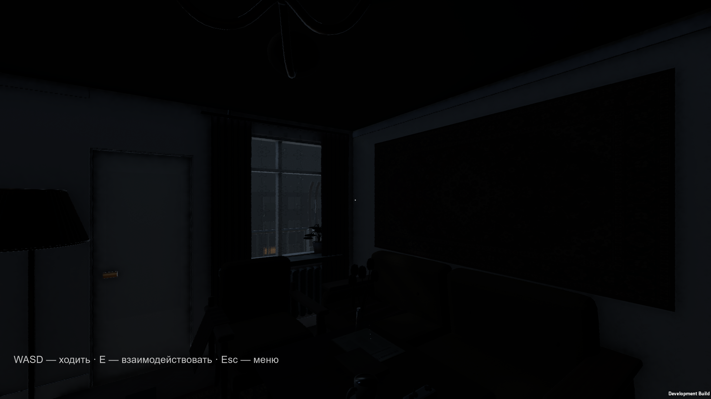
0.2.6 · блэкаутТекущий кадр · свечение отключено тем же выключателемКадры плеера без обработки. Исправлена конкретная ошибка материала; физическая передача света через стекло не моделируется. Световое пятно на потолке, растения и мелкие материалы требуют доводки. M1 не принята.
Домашние растения: 0.2.7 → 0.2.8
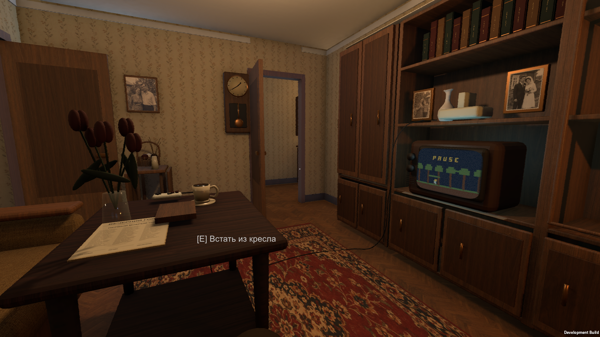
0.2.7 · цельные овальные бутоны0.2.8 · раскрытые лепестки и изогнутые листья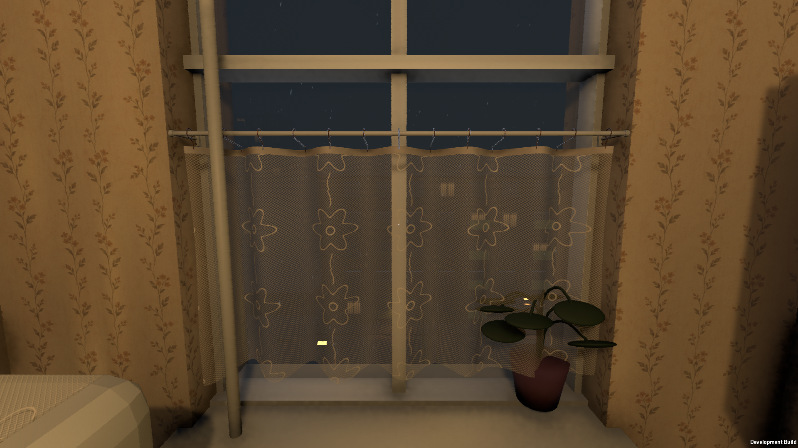
0.2.7 · овальные листья без соцветий0.2.8 · лопастные листья с жилками и цветкиНастоящие кадры того же ракурса. Это исправление конкретного реквизита, не подтверждение равенства с Fears to Fathom. Другие материалы и наружная атмосфера требуют доводки.